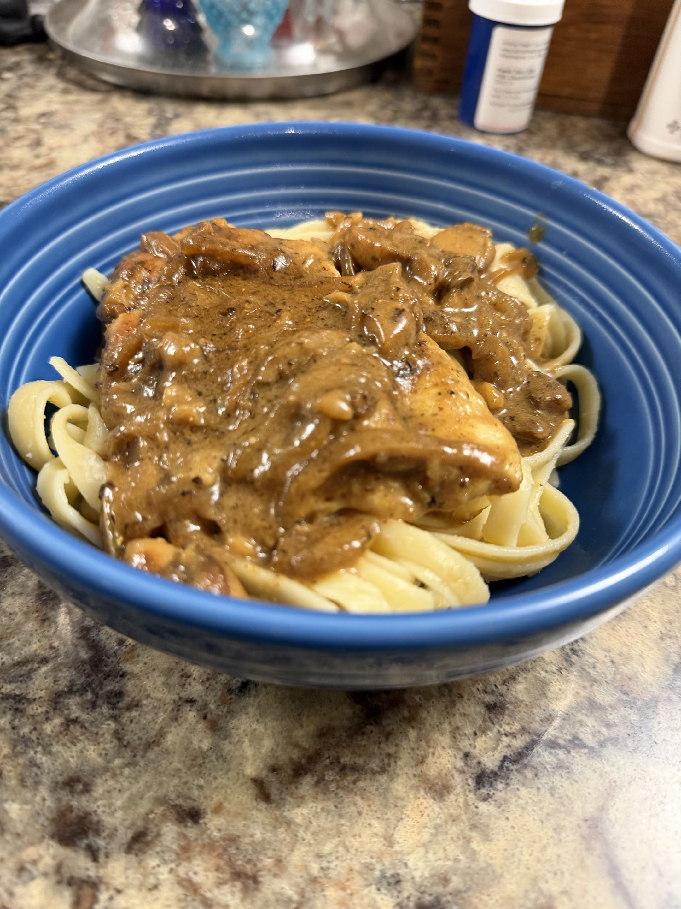

Chicken Marsala (without Wine)

This is the most recent recipe I've made. I was inspired by the chicken marsala dish from Scotto's Italian in Stuarts Draft. I liked it enough to make it myself. This recipe is made for four people and can be served over your choice of pasta or cauliflower.
Ingredients
- 4 thin cut boneless, skinless chicken breasts (or 2 large ones sliced in half to about 1/2" thick)
- 3 Tbsp olive oil and butter
- 1/2 cup all purpose flour * Use white rice or arrowroot flour for gluten free
- 1 shallot (or small onion), peeled and chopped
- 2 garlic cloves, peeled and chopped
- 8-10 oz cremini mushrooms, sliced
- 1 1/2 fluid cups chicken or vegetable broth
- 1/4 cup heavy cream
- 1 Tbsp white vinegar
- 1/2 tsp ground mustard powder (or 1 tsp of dijon)
- 1 tsp dried thyme leaves
- 1 1/2 Tbsp fresh parsley, chopped
Cooking Directions
- Prep onion, mushrooms, garlic. Cut chicken.
- Lightly salt and pepper the chicken breasts, then cover both sides with flour. Save 1 Tbsp of the flour for later.
- In a large pan over medium heat, add 1 Tbsp of olive oil and 1 Tbsp of butter. When shimmering, add flour coated chicken and fry until golden brown on both sides, about 3-4 minutes per side. Transfer to a plate and cover with foil.
- In the same skillet with the drippings from the chicken, add 1 more Tbsp of butter and melt. Add mushrooms, and cook for 3-4 minutes until browned on both sides.
- Add the shallots/onion and garlic to the mushrooms. Mix in the 1 Tbsp of flour. Pour in the 1+1/2 chicken broth & 1 Tbsp vinegar and simmer over medium heat for about 5-7 minutes, until reduced by half and thickened.
- Add the heavy cream, mustard, and thyme. Return the chicken to the sauce mixture and simmer another 2-3 minutes to thicken. Top with parsley and serve.